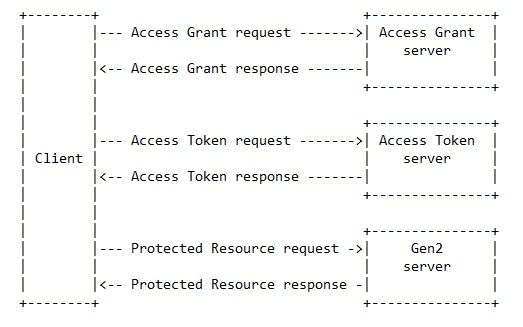

This document, the Gen2 core specification, describes the Gen2 messaging layer.
The companion specifications for the Gen2 transport protocols detail the mapping of the messaging layer to selected transports.
The ontologies based on the Gen2 core specification are defined in documents for each specific domain
(e.g. navigation, media, vehicle data).
Introduction
This document describes the messaging API for Gen2 protocol.
This includes the messaging layer and set of rules for structuring data.
The separation between payload encoding (transport) and messaging API (core) improves adaptability.
Extending and describing multiple transport protocols becomes possible.
The messages are exchanged between a server implementation holding the representation of data
and a client using the data.
The Gen2 messaging layer uses a RESTful design for all methods exchanged via the interface ().
The Gen2 data structuring rules (VSS Rule set) are the same through all transport protocols.
The basis for structuring data hold by a server is a tree.
Terminology
The acronym 'Gen2' is used to refer to this document, the second generation specification. The acronym 'VSS' is used to refer to the 'Vehicle Signal Specification' which is defined by the GENIVI Alliance. The term 'WebSocket' when used in this document, is as defined in the W3C WebSocket API and the WebSocket Protocol.
Data model
The service is intended for use with a tree-like logical taxonomy to
represent the vehicle data. An illustrative example of such a tree
structure is shown in Figure 1. While it
is meant to support conforming taxonomies it was created principally
with the Vehicle Signal Specification (VSS) in mind. For more
details, see the VSS documentation.
Diagram showing an example VSS 2.0 tree.
Addressing
Addressing of elements is done using URIs as defined in [[RFC3986]].
The scheme describes the protocol to use to reach the addressed element.
The authority describes where to reach the server holding and managing the data representation.
Scheme and authority are defined within the protocol adaptation.
The path consists of the slash delimited node names of the nodes traversed from the tree root to the tree leaf representing the data point. E. g. the path expression from traversing the nodes Vehicle, Car, Engine, RPM would be "Vehicle/Car/Engine/RPM". The VSS data model uses a dot as delimiter, the implementaion of this specification is expected to handle the necessary translation.
The query contains further information related to the request, see .
Service discovery
The purpose of the data model is to provide a client with a description of the data that enables the client to make a request for desired vehicle data, and interpret the response. In order to obtain that description, the client MAY request that the server returns the VSS tree content, i. e. the metadata describing the accessible vehicle data. The client is able to request metadata from any point in the signal tree, such that only the metadata for the nodes within the given branch of the tree is returned. For example, only metadata for the chassis branch of the VSS tree is returned when the chassis path is specified. If the path is set to the VSS root, the response contains the metadata for the entire tree. If the server is able to satisfy the request it SHALL return a Response message. If an error occurs the server SHALL return an ErrorResponse message. A service discovery request has the format of a read, where the path is appended with a query component, see for the details. The key data components of these messagess are defined below:
Request message parameters:
Path: The address to one or more nodes in the VSS tree, followed by the query component specifying the service discovery.
Response message parameters:
Metadata: The content of the VSS tree where the root is specified by the path.
Timestamp: A timestamp associated with the request.
ErrorResponse message parameters:
Error: Information describing the error reason.
Timestamp: A timestamp associated with the failed request.
Dynamic registry
To enable e. g. after-market services it SHALL be possible to dynamically add new branches to the VSS tree, and if requested also to delete them at a later point. Requests of this type are not expected to be frequent for the type of data that is represented in the "vehicle signal domain", which is the current scope of VSS. These requests are therefore partitioned in a separate API, which is described in "Appendix: Dynamic registry API".
Filtering
Filtering is a mechanism to refine a client request, in order to more precisely control the data in a response. Filtering can be applied in read requests and in subscribe requests.For read requests the filter expression MUST be appended to the request path in the form of a query component following the description in [[RFC3986]]. For subscribe requests the filter expression MUST be carried in the request payload. The filter expression follows the same general rules in both request cases. The query component must have the following structure
reserved-word comparison-operator expression
where
- reserved-word must have the dollar-sign as the first character ($). The availabe reserved words are described in the chapters below.
- comparison-operator is one of either the equal sign (EQ), the greater than sign (GT), or the less than sign (LT).
- expression is a character string with its interpretation given by the preceeding reserved-word and comparison operator.
Filter expressions can consist of multiple query expressions, as described in .
As filtering is implemented on the server side, in vehicles, the filtering complexity is intentionally kept to a low level in order to not load the processing resources too much.
Read filtering
The available read filtering options are presented in the following chapters, and are only applicable to read requests. As described in [[RFC3986]], a question mark must be inserted as a delimiter between the path and the query components.
Service discovery filter
The service discovery query has the structure
$spec EQ depth
where
- $spec is the reserved word for service discovery filtering.
- the equal sign (EQ) is the only allowed comparison operator for service discovery filtering.
- depth sets the maximum branch depth that is returned in the response, counted from the root node given by the path component in the request.
Depth MUST be a positive integer. If set to zero, it is replaced by the max depth of the subtree.
Search filter
If the path in a read request does not terminate in a leaf node, then the response will contain values from all leaf nodes in the subtree given by the path. The search filter makes it possible to tailor a subset of this response. The search query has the structure
$path EQ search-expression
where
- $path is the reserved word for search filtering.
- the equal sign (EQ) is the only allowed comparison operator for search filtering.
- search-expression is a path expression that may contain the wildcard character (*) for representation of an unknown node name.
The search-expression is relative to the root node given by the path component in the request. An example could be "*/*/isOpen", which, preceeded with a slash, and concatenated with the request root-path "Vehicle/Cabin/Door" would generate the absolute search expression "Vehicle/Cabin/Door/*/*/isOpen", in which case the response would contain all values from the isOpen nodes in that subtree, but not from the other possible leaf nodes in it.
The search filter can be used also in subscribe requests, see chapter Filter combinations.
The response message on a request addressing multiple signals contains all the matching signal values. Notifications from a subscription addressing multiple signals contain one signal value per notification.
Data value filter
If a request, typically when it is addressing a subtree, is only interested in response data with a specific value, then a data value filter can be used.
The data value query has the structure
$data comparison-operator value
where
- $data is the reserved word for data value filtering.
- comparison-operator is one of either the equal sign (EQ), the greater than sign (GT), or the less than sign (LT).
- value is a number following Javascript syntax rules, or a boolean value.
If the data type of the value-expression is different from the data type of the node matching the path, then an error response is returned.
Subscribe filtering
The available subscribe filtering options are presented in the following chapters, and is only applicable to subscribe requests. The filter expression is carried in the request payload in the form of a key-value pair "filter": "filter expression", where "filter" is the key name, and "filter expression" is replaced by the actual expression.
Interval filter
An interval filter is used in a subscribe request when the client wants subscription notifications to be issued by the server at a regular time interval.
The interval query has the structure
$interval EQ value
where
- $interval is the reserved word for interval filtering.
- the equal sign (EQ) is the only allowed comparison operator for interval filtering.
- value is an integer value in milliseconds representing the interval between issued notifications.
Range filter
A range filter is used when the client wants subscription notifications to be issued by the server when a value enters/exits the defined range.
The range query has the structure
$range comparison-operator value
where
- $range is the reserved word for range filtering.
- comparison-operator is one of either the greater than sign (GT), or the less than sign (LT).
- value is a number following Javascript syntax rules.
Change filter
A change filter is used when the client wants subscription notifications to be issued by the server when a value has changed more than a defined value since last notification.
The change query has the structure
$change comparison-operator value
where
- $change is the reserved word for change filtering.
- comparison-operator is one of either the greater than sign (GT), or the not equal sign (NEQ).
- value is a number following Javascript syntax rules.
When using the not equal comparison operator it MUST have the value zero, all other values lead to an error response. The usage is interpreted as "for any change", and also supports boolean changes.
Filter combinations
Queries of the types descibed below can be aggregated to form more complex queries. The format for this is then
query1 AND query2 AND .. queryN
where
- queryN is any of the query types, following the allowed combinations shown in Table 1.
- N is maximum four.
- AND is the logical AND operator.
Index
Filter name
Allowed combinations
1.
Service discovery
None
2.
Search
3+4+5+6
3.
Data value
2
4.
Interval
2
5.
Range
2+5+6
6.
Change
2+5
An example of a read request URI containing an aggregated query is
Vehicle/Cabin/Door?$pathEQ*/*/isOpenAND$dataEQfalse
which would return data for all locked doors.
In filter combinations where a search expression in the URI is combined with a subscribe filter expression in the payload, the logical AND operator combines them.
Access control model
Access control MUST be supported. However, in this chapter only the sections that describe the interactions between the Client and the Gen2 server are normative.
Architecture
This section is non-normative.
The Gen2 access control model is inspired by the concepts of OAuth2.0 [[RFC6749]], but some deviations exist as is described in the following chapters.
Four actors are defined: Client
An application making protected resource requests on behalf of the User and with its authorization. Access Grant server
The server issuing the Access Grant credential after successfully authenticating the Client. Access Token server
The server issuing the Access Token to the Client after successfully validating the request and obtaining authorization. Gen2 server
The server hosting the protected resources, capable of accepting and responding to protected resource requests using Access Tokens.
The abstract protocol flow illustrated in the figure below describes the interaction between the four actors.

The abstract protocol flow.
Besides the four actors directly involved in the abstract flow, there are two more actors. Resource owner
This is typically the driver of the vehicle, who may be asked for consent before access is granted. Ecosystem manager
The entity managing the access control ecosystem. It controls the Policy documents, and manages the PKI ecosystem that the other actors may utilize.
The abstract protocol flow is implemented by two different flows, as will be described in the following chapters.
The process to obtain the credentials needed for Client authentication is out-of-scope, as well as the installation procedures for the applications.
Protocol flows
This section is non-normative.
Two different flows are described. Which flow to use depends on the capabilities of the Client. If a Client is able to run public key cryptographic primitives,
i.e. key pair generation and signatures, and has access to some kind of trusted execution environment where private keys are protected from the regular execution environment,
then it can use the Long term flow. Clients that do not have access to these capabilities, or do not want to use them, must select the Short term flow.
The advantage of using the Long term flow is that the Client does not have to contact the AGS when it needs a new Grant token, as it can self issue a new.
In the Short term flow the Client must contact the AGS every time it needs a new Grant token.
A Client selects the type of flow by either submitting a public key in the AG message, or not. The latter leading to an Short term flow.
Protocol messages
This section is non-normative.
This chapter describes the payloads of the messages used in the protocol flow.
Access Grant request
The request shall contain the first two parameters below, the others are optional:
VIN: The vehicle identification number of the vehicle the Client wants to have access to.
Context: The context associated to the Client. The context consists of a triplet of roles for User, App permissions, and Device characteristics.
Proof: A proof mechanism that is used by the Client to attest its context to the AG server. This is indeed a composed proof for the User role, App permissions, and Device characteristics. If a public key is included in the request, the proof parameter will also include of proof of possession for this key.
Public key: If this parameter is present, the request shall contain a public key of a key pair generated and owned by the Client, and the Proof parameter shall include a proof of possession.
Depending on the kind of Proofs included in the request, the client and the server may need to run an interactive protocol to verify them. This protocol may involve also third parties, such as the Ecosystem manager or the resource owner.
Access Grant response
The response shall contain the first parameter below, the other is optional:
AG token: A signed token with claims needed for the validation of the Client request.
Proof: A proof of possession of the Client public key.
The response for a successful access grant request is a Short term Access Grant token. This can be used as direct input to the Access Token server, or its claims can be used to create a Long term Access Grant token for Clients that prefer that option, and have the capability to do so.
If the request contained a public key, then the AGS shall create an object that the Client can use as a proof of that it is the owner of the public key.
This is done by creating a digital signature for the public key, signed by the AGS private key.
The Access Grant token is a digitally signed document issued by the AG Server including all relevant information needed to issue Access Tokens.
An error response shall contain the following parameters:
Error code: The error code shall be informative in order for the Client to understand what it needs to correct to become successful.
Access Token request
The request shall contain the first two parameters below, the other is optional:
AG token: A signed token with claims needed for the validation of the Client request.
Purpose: The Purpose shall be one of the short text entries from the Purpose list.
Proof: A proof of possession of the public key in the AG token.
All access token request should include an AG token. Moreover, if the Access Grant token includes a public key, the Client should also include in the request a fresh proof of possession for this public key.
Apart from the AG Token, the request should include the short name of a Purpose found on the Purpose list owned by the Ecosystem manager.
The Access Token server acts as a Policy Enforcement Point, making decisions on whether to grant access to the protected resource based on the provided AG Token and Purpose.
Access Token response
A successful response shall contain the following parameters:
Access token: The Access token to be used in Client requests to the Gen2 server for Protected Resources.
An error response shall contain the following parameters:
Error code: The error code shall be informative in order for the Client to understand what it needs to correct to become successful.
Protected Resource request
This is the Gen2 request including an Access token that is described in general in the Interface chapter, and for different transport protocols in the Gen2 CORE document.
Protected Resource response
This is the Gen2 response that is described in general in the Interface chapter, and for different transport protocols in the Gen2 CORE document.
Actors
Client
This section is non-normative.
The Client is an abstract representation of three sub-actors:
The Device. It is in charge of running the Apps that make requests to the Gen2 server
The App. It runs requests on behalf of the User.
The User. Delegated access rights to the App.
All the information regarding the client is encoded in the Context of the request.
Access Grant server
This section is non-normative.
The Access Grant server (AGS) is in charge of producing Access Grants to Clients.
Depending on the capabilities of the Client, the specification supports two types of Access Grant Tokens: Short term and Long term AG Tokens.
Long term Access Grant Tokens, are supported for those Clients able to run public key cryptographic primitives, i.e. key pair generation and signatures,
and is the recommended choice for Clients with access to some kind of trusted execution environment where private keys are protected from the regular execution environment.
The Client must create and sign the Long term AG token, which must contain the public key that corresponds to the private key used by the Client to sign the AG token.
The specification also supports Short term Access Grant Tokens that require no extra capabilities in the client,
but due to its shorter expiry time it forces the client to contact the AGS more often before ATS requests for an Access Token.
The Client request shall contain the following:
A VIN.
A Context.
A set of Proofs.
If the Client needs a Long term AG token, then the request shall also contain:
A public key.
The Vehicle identification number shall be for the vehicle that the Client wants to access.
The Context contains all relevant information from the client, i.e. for each of the three sub-actors that the Client represents.
The Proofs are to be used for verifying the Context of the Client.
The public key shall be generated by the Client, and the associated private key must be under control of the Client.
The main responsibilities of the Access Grant server are:
To verify the Client Context, and assess that their respective role request can be granted.
To check that the vehicle represented by the VIN belong to this Ecosystem, and is accessible.
To create an Access Grant.
The proofs may include certificates from a Certificate Authority known by the AG server. The AG server shall validate the certificate signature,
and utilize certificate information to assess that the requested role can be granted.
The AG server may contact the Ecosystem manager for checking the VIN.
The Access Grant generation is defined in the corresponding chapter.
Access Token server
This section is non-normative.
The Client shall after a successful interaction with the AG server request an Access token from the Access Token server.
The Client input in that request must be:
An Access Grant token.
A Purpose.
Optionally, for Long term Access Grant tokens, i.e. those including a public key, the Client must also include in the request a fresh proof of possession.
The Purpose must be supported by the Ecosystem manager, and thus be on the Purpose list, see the chapter Purpose list.
The Purpose list associates a set of accessible signals to the Purpose, thus realizing the principle of least priviledge.
The main responsibilities of the Access Token server are:
To validate the Access Grant token.
To validate that the Client context provides permission for the requested Purpose.
To create an Access Token.
The validation of the AG token consists of at least the following:
Signature validation.
Expiry time check.
Additionally, when the token contains a public key, i.e. Long term Access Grant tokens, the Access Token server needs to verify that there is a valid and fresh proof of possession for this public key.
The Short term AG token signature validation is done with the AG server public key, for a Long term AG token it is done with the public key contained in the token.
In the latter case also the proof of the Client possession of the public key must be validated.
The expiry time must be later than the current system time of the AT server run-time. To allow for some time synchronization inaccuracy an error of tens of seconds may be allowed.
If the Client context as declared in the AG token does not match in the set of allowed roles for the requested Purpose in the Purpose list document,
then the client request for an Access token must be denied.
The Access token to be generated is defined in the chapter Access token.
Gen2 access control server
The Gen2 server MUST support validation of Access tokens.
This includes validation of at least the following:
Token signature.
Token expiry time.
Token scope.
Token access mode.
If any of the mentioned validations above fail, the server MUST reject the access request.
Token signature validation may be delegated to the AT server, if a secure communication link can be established.
If not delegated, then a preprovisioned common secret may be shared with the AT server, or other PKI based solutions may be used.
The Gen2 server SHALL have access to a secure system time, that cannot be modified by actors without system acknowledged credentials.
Time validation may allow for a time synchronization inaccuracy in the range of tens of seconds.
A successful scope validation requires that all the nodes addressed by the path in the request MUST be matched by the paths associated to the Purpose in the scope claim of the Access token.
Validation of the Device and App roles may involve MAC address checks, message round-trip measurements, etc.
The access mode validation MUST have the outcome shown in the table below,
when comparing the type of the Client request with the access control mode in the Purpose list that is associated to the scope claim in the Access token.
If the Client request contains several signals, and one fails the validation, then the entire request MUST be rejected.
Validation
Read-only
Read-write
get set subscribe
Ok
Ok
Nok
Ok
Ok
Ok
The Access Token need to be refreshed periodically, which is controlled by the expiry time. If the AG token that the Client used to obtain the now expired token is not expired,
then the Client can revisit the AT server with this AG token to obtain a new Access token.
If the AG token is expired, then the Client must obtain a new AG token first, before revisiting the AT server.
The process for this depends on whether the Client has the capability to self sign AG tokens ,
in which case it can generate the new AG token itself, given that the expiry time for this has not expired.
For Client requests that are not granted due to access control, the Gen2 server MUST return one of the error codes shown in the table below.
Error Number (Code)
Error Reason
Error Message
404 (Not Found)
missing_token
One or more of the requested signals are access controlled, an access token must be included in the request.
406 (Not Acceptable)
invalid_token
A fresh access token must be obtained.
406 (Not Acceptable)
insufficient_priviledges
The priviledges represented by the access token are not sufficient.
Resource owner
This section is non-normative.
The Resource owner is typically the owner and/or driver of the vehicle. If Consent is required for granting access to the protected resource,
then it should be directed to the Resource owner.
Ecosystem manager
This section is non-normative.
The Ecosystem manager is the entity responsible for the functionality of the access control system. This typically includes the management of the Access Grant server,
and the Access Token server, the Policy documents, and that there is a PKI domain for the other actors to utilize.
Credentials
Client authentication
This section is non-normative.
The three Client sub-actors must provide authentication credentials to the AG server.
This may be certificates that the sub-actors have obtained from a Certificate Authority that is known by the AG server.
The interactions related to this is out of scope.
Access Grant Token
This section is non-normative.
Long term AG Token
The Long term Access Grant token shall have the following claims in header and payload.
Algorithm (alg) shall be set to "HS256".
Type (typ) shall be set to "JWT".
Issued at (iat) shall be set to the time of token issuance, in Unix time.
Expiry (exp) shall be set to the time when the token expires, in Unix time.
Client context (clx) shall be set to the role triplet the client has been assigned. The delimiter separating the roles is a plus sign (+).
Public key (pub) shall be set to the binary public key that the Client provided in the AG request.
Digital signature (sig) shall be set to the digital signature of the claims pub, exp, and clx according to the following.
The signature is calulated on the data from a concatenation as follows: Public key|W3C-Gen2|Expiry time|W3C-Gen2|Client context
where "W3C-Gen2" is a case sensitive text string, and "|" is a vertical line character.
Audience (aud) shall be set to the URL "w3.org/gen2".
JWT ID (jti) shall be set to a UUID that is unique within the domain controlled by the Ecosystem manager.
Short term AG Token
The Short term Access Grant token shall have the following claims in header and payload.
Algorithm (alg) shall be set to "HS256".
Type (typ) shall be set to "JWT".
Issued at (iat) shall be set to the time of token issuance, in Unix time.
Expiry (exp) shall be set to the time when the token expires, in Unix time.
Client context (clx) shall be set to the role triplet the client has been assigned. The delimiter separating the roles is a plus sign (+).
Audience (aud) shall be set to the URL "w3.org/gen2".
JWT ID (jti) shall be set to a UUID that is unique within the domain controlled by the Ecosystem manager.
Access Token
The Access token SHALL have the following claims in header and payload.
Algorithm (alg) shall be set to "HS256".
Type (typ) shall be set to "JWT".
Issued at (iat) shall be set to the time of token issuance, in Unix time.
Expiry (exp) shall be set to the time when the token expires, in Unix time.
Scope (scp) shall be set to the Purpose short name, which logically links to the signal scope as defined in the Purpose list.
Client context (clx) shall be set to the role triplet the client has been assigned. The delimiter separating the roles is a plus sign (+).
Audience (aud) shall be set to the URL "w3.org/gen2".
JWT ID (jti) shall be set to a UUID that is unique within the domain controlled by the Ecosystem manager.
Client context
This section is non-normative.
The Client actor described in the Client chapter is characterized by three subactors:
The device.
The application.
The user of the application.
Each of these subactors is in turn characterized by a role,
building on the concept of a Role Based Access Control (RBAC) model.
The set of these three roles is called the Client context.
Gen2 specifies a rudimentary list of roles for each subactor, it is expected that these lists are augmented by the Ecosystem manager, hopefully in a cooperative effort.
Using an RBAC model provides the following main purposes in the Gen2 access control model:
Input to the AG server in the Client authentication process.
Input to the AT server in the Purpose validation.
The AG server must in the authentication process of the client possibly separately authenticate each of the three subactors.
For the AG server to decide on which authentication method to use per subactor can be quite complex, but may be somewhat eased by the Client request for roles for each subactor.
From a security point of view a Client should not have access to more vehicle signals than are necessary, following the principle of least priviledge. This is achieved by the Purpose document described in the Purpose chapter, that assigns only the for the Purpose relevant signals to the Client.
Device roles
Gen2 specifies the following minimum set of roles for devices:
Vehicle
Nomadic
Cloud
Undefined
A Vehicle role is used for applications that are deployed in-vehicle, in e. g. the center stack ECU.
A Nomadic role is used for applications that are deployed in a User's mobile phone, laptop, etc, that uses short range radio communication like Bluetooth, or WiFi.
A Cloud role is used for applications that are deployed in off-vehicle devices, and uses a long range radio communication like cellular in the connection to the vehicle.
Application roles
Gen2 specifies the following minimum set of roles for applications:
OEM
Third party
Undefined
An OEM application role is used for applications that are pre-installed in the vehicle by the OEM, or later OEM-provisioned to the vehicle.
A Third party application role is used for applications that are "certified" for vehicle deployment, but developed by a third party.
User roles
Gen2 specifies the following minimum set of roles for users:
OEM
Dealer
Independent
Owner
Driver
Passenger
Undefined
An OEM user is anyone representing the vehicle brand.
A Dealer user is anyone representing a normally OEM affiliated organisation that provice sale and workshop services for the vehicle.
An Independent user is anyone representing a normally OEM independent organisation that provide after-market services for the vehicle.
An Owner user is anyone representing the organisation owning the vehicle.
A Driver user is anyone driving the vehicle.
A Passenger user is anyone travelling in the vehicle, but not being the Driver.
Policy documents
This section is non-normative.
The Policy documents are typically owned and created by the Ecosystem manager. They need to be handled securely to protect their integrity.
The Ecosystem manager shall securely provision them to the Access Token servers in the access control ecosystem.
Purpose list
A Client shall provide a Purpose as input to a request for an Access token. A list of supported purposes needs to exist for a client to select from. The Ecosystem manager shall therefore provide means for Clients to survey the list to find a Purpose that fits its use case.
Each entry in the list contains a short description of the purpose, which is what the Client shall provide as input to its request for an Access token. There is also a long description, which may be used in the dialogue for consent, if needed. Then there is a list of the Client contexts, i. e. the sub-actor role triplet, that can be granted this access, and last there is a list of the signals that the client is given access to for this purpose, with the allowed access mode. The list shall use a JSON format as shown in the example below.
{"purposes":
[{"short": "Pay as you drive",
"long": "Insurance cost based on drive data.",
"contexts":[ ["OEM", ["OEM", "Third party"], "Vehicle"], [ ] ],
"signal_access":
[{"path": "Vehicle.Drivetrain.Transmission.Speed", "access_mode": "read-only"},
{"path": "Vehicle.Cabin.Infotainment.Navigation.CurrentLocation.Latitude", "access_mode":"read-only"},
{"path": "Vehicle.Cabin.Infotainment.Navigation.CurrentLocation.Longitude", "access_mode": "read-only"}]
},
{}]
}
The Purpose list shall be securely provisioned to the AT server. The protocol for this is out-of-scope.
The AT server must reject all requests for Access tokens if it is not in possession of a Purpose list.
Scope list
The Scope list contains a list of the VSS tree nodes for which access shall be prohibited, per Client context.
This prohibition is regardless of whether the Client has a valid Access token or not.
The Scope list can also be used to limit the node metadata that is returned on a Client service discovery request.
Each entry in the list contains a list of paths to nodes that should be excluded, and a list of the Client contexts, i. e. the sub-actor role triplet, for which this exclusion should be made.
The list shall use a JSON format as shown in the example below.
The Scope list shall be securely provisioned to the AT server. The protocol for this is out-of-scope.
The AT server shall not restrict the scope for any Client context if it is not in possession of a Scope list.
Access control selection
This section is non-normative.
This chapter describes a complementary functionality to the access control model, the ability to apply it selectively to parts of the tree.
It can be used in cases where not all nodes of the tree are believed to require access control,
or read-only is sufficient instead of read-write access control for certain nodes.
This functionality requires that the Access token specifies whether the access granted to the Client to a signal is read-only, or read-write.
It also requires that the metadata for the node in the VSS tree contains data specifying whether the access control verification should be carried out only for write request,
or for both read and write requests.
The former requirement is realized as described in earlier chapters by that the Access token scope claim links to a Purpose entry in the Purpose list
where the signals and their respective access mode are found.
The latter requirement is realized by adding to nodes in the VSS tree the key-value pair "validate":'access-control-mode',
where 'access-control-mode' is either the string "write-only", or "read-write". Access control selection tagging.
The figure above shows an example where both read and write requests to the three leftmost leaf nodes will be access controlled,
while the two rightmost leaf nodes only will be access controlled for write requests.
An inheritance rule leads to that any nodes below a tagged node are assigned the same access control, if they are untagged.
This metadata is not likely to be applied to the standardised VSS tree, as different implementers of this standard may have different views on which nodes to apply it to.
Instead it is anticipated that it is applied at a "deployment" stage, possibly using the VSS layering concept.
The inheritance model, which says that if access-control-mode data is added to a node, then all nodes in the subtree for which this node is the root inherits the setting,
unless there is access-control-mode data added to any node in this subtree, makes possible a reduction of the number of nodes this metadata have to be added to.
This allows for example an entire VSS tree to be assigned an access-control-mode by merely applying it in the root of the tree.
The figure below shows an overview of the access control selection model,
and a table showing the required access control tagging of a node for the Gen2 server to grant the requested access.
Access control selection model.
If the VSS tree used by a Gen2 server contains access control selection tags, then the server MUST support their usage as described in this chapter.
If it is not used, then a server may implement access control for the entire tree.
Interface
This chapter describes the different methods and its arguments that govern the communication between a client and the server.
Methods
The transport protocols used to implement these methods MUST implement the Read and Update methods, and MAY implement the Subscribe, Unsubscribe, and Subscription methods.
Read
Purpose: Get one or more values addressed by the given path.
The client MAY have to obtain an authorization token before being able to access the values.
If the server is able to satisfy the request it MUST return a success response.
If the server is unable to fulfil the request, then the server MUST return an error response.
Arguments:
path The path as defined in VSS to one or more nodes in the VSS tree.
filter Additional information defining the requested data.
Purpose: Provide altered value to the vehicle signal(s) addressed by the path
The client MAY have to obtain an authorization token before being able to update the vehicle signal(s).
If the server is able to satisfy the request it MUST return a success response.
If the server is unable to fulfil the request, then the server MUST return an error response.
Arguments:
path The path as defined in VSS to one or more nodes in the VSS tree.
value The value by which the vehicls signals addressed by the path will be updated to.
timestamp The time for updating of the vehicle signals.
Subscribe
Purpose: Get asynchronous messages containing the value(s) addressed by the path. The triggering rules for issuing the notification messages are set by the filter data.
The client MAY have to obtain an authorization token before being able to subscribe to the vehicle signal(s).
The server MUST issue a notification if a trigger rule is fulfilled.
If the server is able to satisfy the request it MUST return a success response.
If the server is unable to fulfil the request, then the server MUST return an error response.
If an error occurs during the subscription period, the server SHOULD return an error notification.
Arguments:
path The path as defined in VSS to one or more nodes in the VSS tree.
filter The rule set describing triggering criterias for issuance of asynchronous notification messages.
subscriptionId A handle identifying notification messages associated with the subscription.
timestamp The start time for the subscription period.
Unsubscribe
Purpose: Termination of the subscription period started by a previous subscribe request.
If the server is able to satisfy the request it MUST return a success response, and it MUST stop issuing notifications associated to the subscription handle.
If the server is unable to fulfil the request, then the server MUST return an error response.
timestamp The stop time for the subscription period.
Subscription
Purpose: Asynchronous client notification according to the subscribe request trigger rules.
The server MUST issue a notification message when a triggering rule associated with the subscription is met.
If the server cannot fulfill the triggering rules it MUST issue an error notification and terminate the subscription.
The server MUST inform a client about errors ocurring in interactions between the two, whether it is in a synchronous error response to a request message, or an asynchronous error notification message.
Error format
The error information has three components - a number, a reason, and a message. The number MUST always be part of the error information,
while the reason and message components MAY be a part of it.
number See Gen2:TRANSPORT, "Status code" chapter.
reason See Gen2:TRANSPORT, "Status code" chapter.
message See Gen2:TRANSPORT, "Status code" chapter.
Security
Timestamps
Timestamps in transport payloads MUST conform to the ISO8601 standard, using the UTC format with a trailing Z.
Time resolution SHALL at least be seconds, with subsecond resolution as an optional degree of precision when desired.
The time and date format shall be as shown below, where the sub-second data and delimiter is optional.
YYYY-MM-DDTHH:MM:SS.ssssssZ
The exception to this is timestamps within tokens, which MUST conform to Unix time.
Definitions
client
An entity that works with data managed by a server.
server
An entity that manages and offers access to data.
success response
The message being returned by the server to the client when no error is encountered. These are specific per request type
error response
The message being returned by the server to the client when an error is encountered. These have a common format for all request types
error notification
The asynchronous message being returned by the server to the client when an error is encountered.
value
The data that is associated with one or more VSS nodes. Regardless of its data type, a single data item is always represented as a string in message payloads.
timestamp
A date and time representation. See chapter "Timestamps".
filter
Additional to help the server in the selection of data for the client.
query
A filter may consist of multiple query expressions.
authorization
A token providing a verifiable proof that the client may be authorized access to the requested value(s).
subscriptionId
A handle identifying a subscription session.
Dynamic registry API
The dynamic reqistry API provides the functionality to dynamically add or delete branches of the VSS tree. A branch can only be deleted if it has been dynamically added. In the following an entity requesting dynamic registry services is called a "service manager", and the entity performing these requests is called the "core server", see the figure "Gen2 server reference architecure".